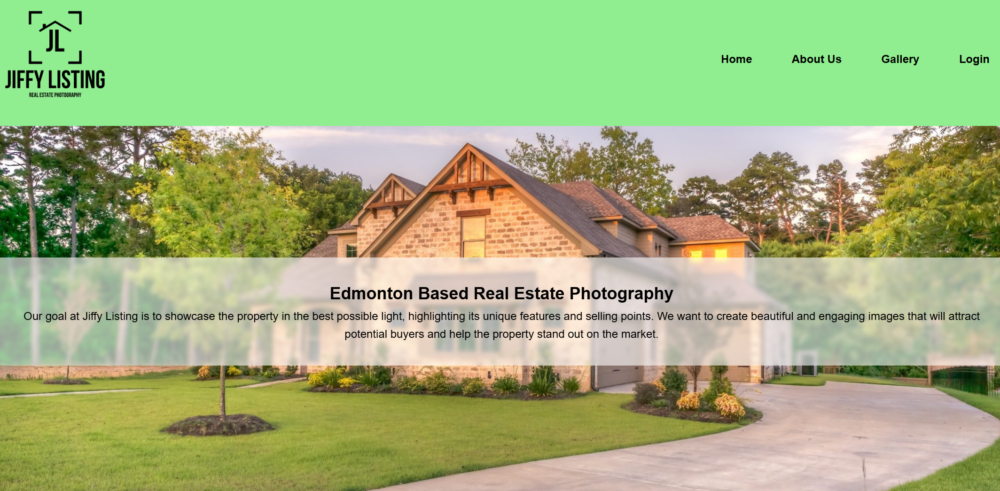
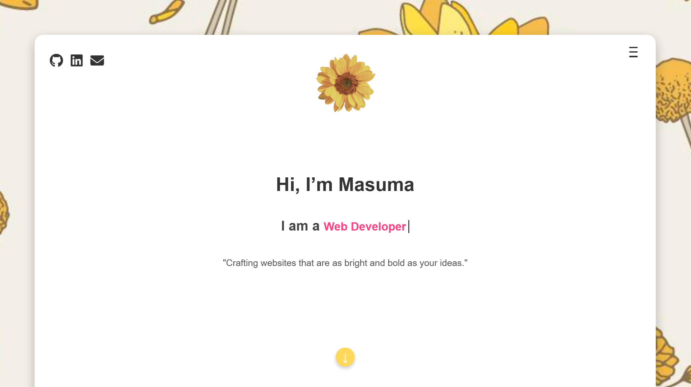
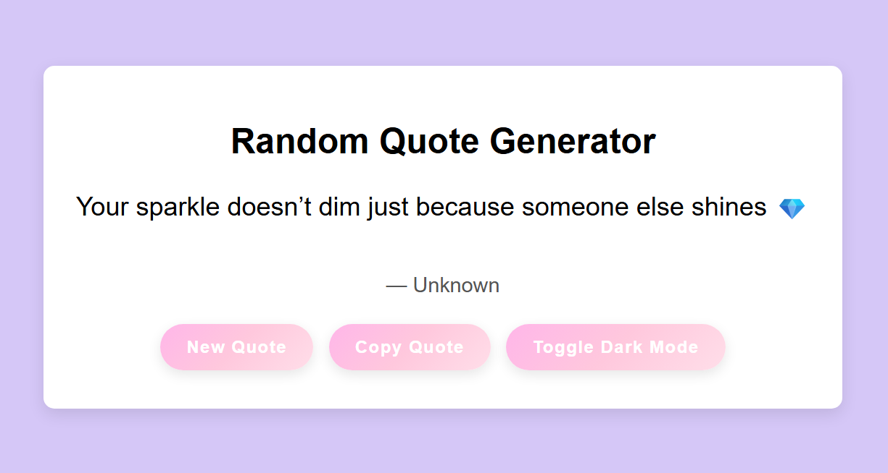
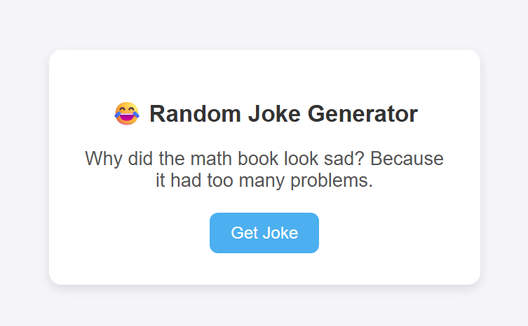
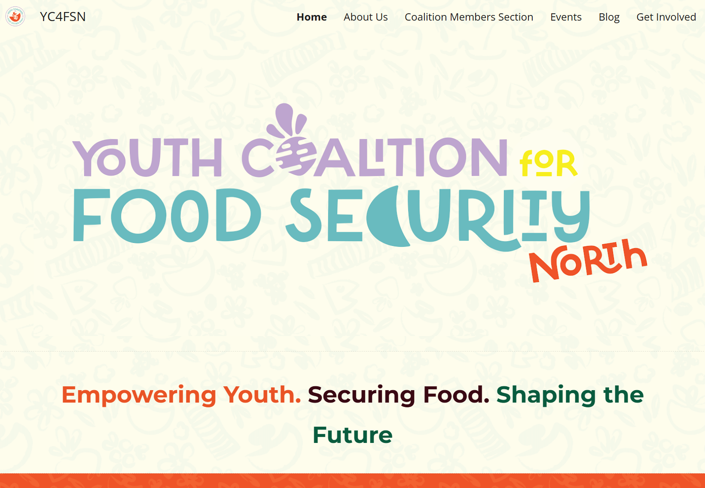

My Projects
A showcase of my work in UI/UX and Web Development.
Project 1: Jiffy Listing — Real Estate Website
Role: UI Design · Frontend Development
Tools: HTML, CSS
A clean and responsive real estate listing website built with semantic HTML and custom CSS. This project features a structured property layout, visual hierarchy, and a user-focused design that simulates a real-world property catalog. It also demonstrates layout techniques like grid systems and media queries.
Project 2: Personal Portfolio Website
Role: UI/UX Design · Development
Tools: HTML, CSS, Javascript
A fully custom-built portfolio site to showcase my web projects, skills, and design philosophy. It emphasizes clean layout, responsiveness, and accessibility while maintaining a minimalist aesthetic. This project demonstrates my ability to structure content clearly and create a consistent user experience.
Project 3: Random Quote Generator
Role: Frontend Development
Tools: HTML, CSS, JavaScript
A JavaScript-based app that displays random inspirational quotes at the click of a button. Designed with a clean UI, the app uses JavaScript to update the DOM dynamically and offers an engaging way to explore quote generation logic and user interaction.
Project 4: Random Joke Generator
Role: Frontend Development
Tools: HTML, CSS, JavaScript (API)
A lightweight JavaScript app that fetches random programming jokes from a public API and displays them with a smooth refresh interaction. This project focuses on API integration, event handling, and responsive UI — wrapped in a fun and lighthearted concept.
Project 5: YC4FSN — Youth Coalition Website
Role: UI/UX Design · Web Development
Tool: Google Sites
Designed a Google Site for YC4FSN to highlight their mission of empowering youth through food security. Focused on clean layout, intuitive navigation, and mobile responsiveness to create a smooth user experience across all sections.
View the Live Site 